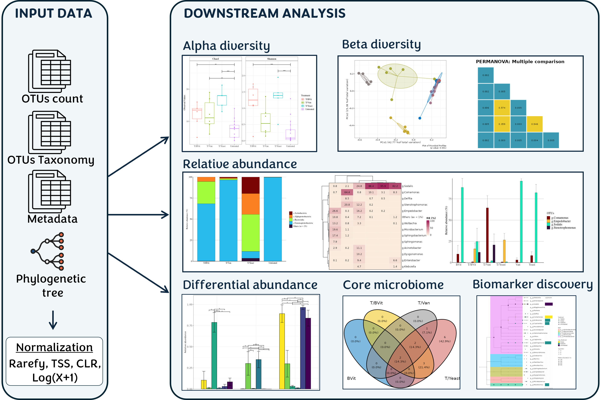

MetaXplore, an interactive user-friendly platform that enables the discovery and visualization of microbial sequencing data. It provides a set of well-documented choices of downstream analysis classified in the following sections:
- Import Data: Determine the dataset to use as the starting point of the analysis.
- Alpha Diversity: Calculate alpha diversity indices among samples and visualize indices in boxplots with significant differences between the groups.
- Beta Diversity: Calculate the beta-diversity between samples and visualize groupings of samples according to a given category.
- Relative Abundance: calculate relative abundance matrix and produce abundance stacked bar chart, heatmap, and bar chart for different taxonomy levels according to a given category.
- Differential abundance : Test the significant variation in OTUs abundance at different taxonomic levels.
- Core microbiome: Identify the core OTUs based on the percentage of occurrence in samples and their abundance.
- Biomarker discovery: Identify the discriminant taxa between groups of samples.
